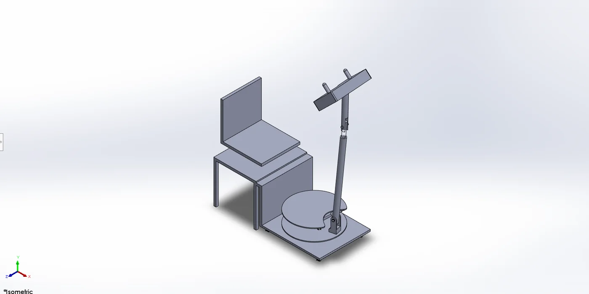
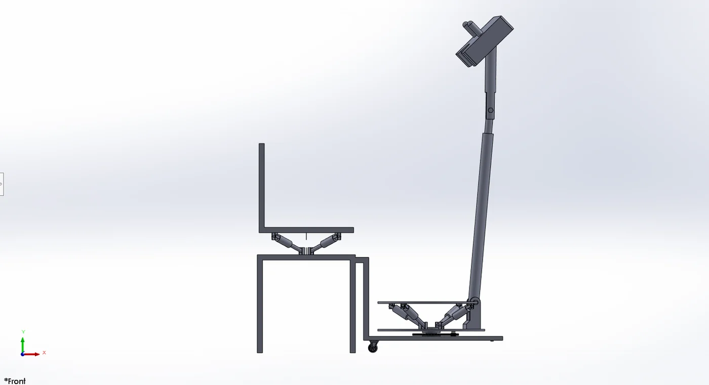
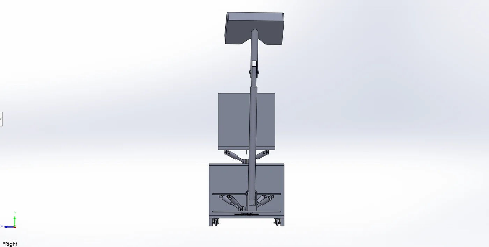
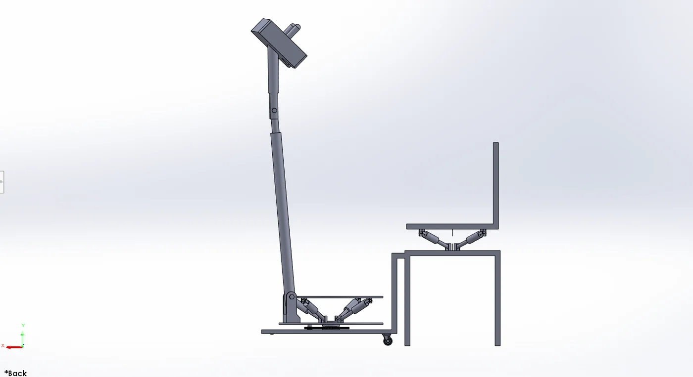
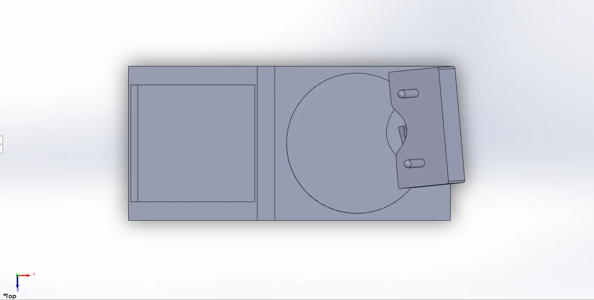
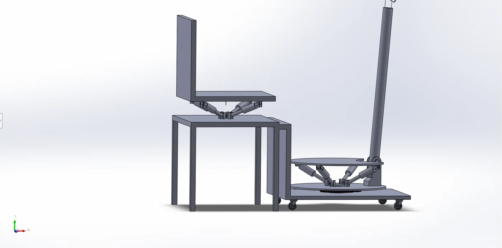
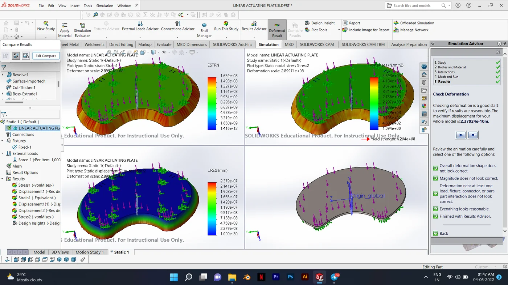
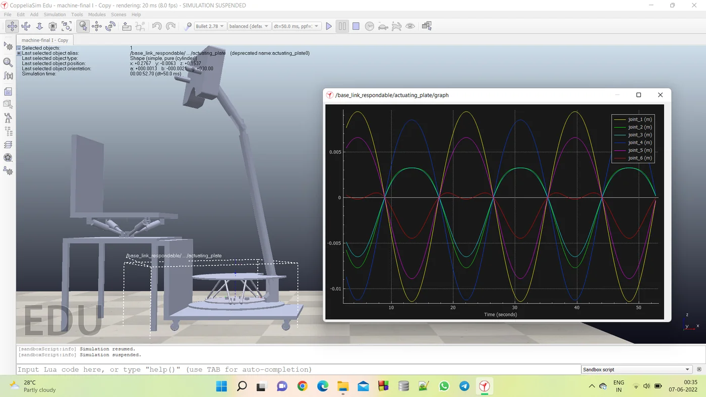
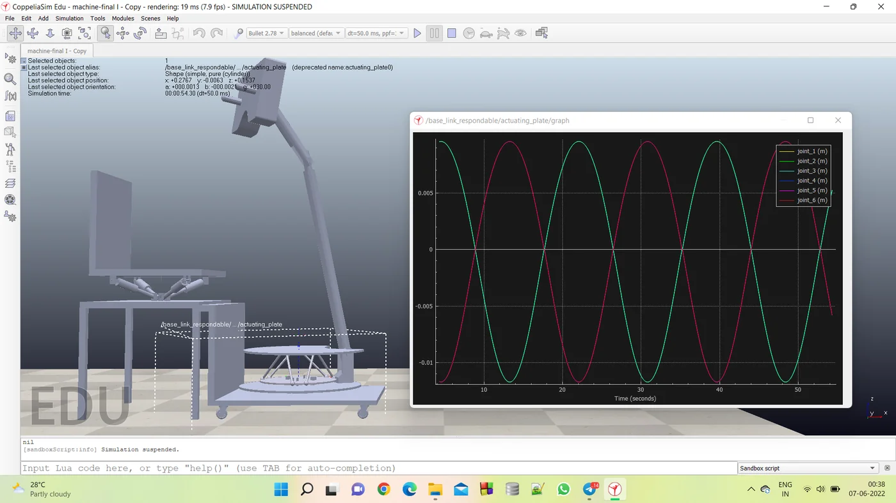

Ankle rehabilitation robot
A mini project on ankle rehabilitation with parallel manipulators, built with mechatronics and robotics principles.
- Project
- 6th semester mini project
- Field
- Mechatronics
- Team
- S. Hari Prasanth, K. Kalyanrajkumar, R. Madhavan
- Guide
- Dr. Hari Krishnan R
- Stack
- SolidWorks · CoppeliaSim · Python
- Repo
- No public repo
photos and videos
swipe or use the arrows








origin
My 6th semester mini project, built with mechatronics and robotics principles.
problem statement
The purpose of this automated machine is to assist people with paralysis in their everyday exercise routine. It is meant to help people with cerebral palsy, paralysis or similar disabilities do their daily exercise on their own, without a caretaker. To study the machine, we created the whole machine in 3D CAD software (SolidWorks) and then simulated it in real-life situations with simulation software (CoppeliaSim). The ultimate goal is to help people with paralysis move their muscles to avoid extreme muscle atrophy, improve their blood circulation and loosen stiff joints.
engineering constraints to overcome
- Three degrees of freedomAchieve 3 DOFs for multiple movements of the ankle.
- Range and speedReach the desired range of motion, and the speed in rpm for the turntable.
- LoadConsider the load applied on the plate and vary the movement speed accordingly.
- The plateGet the stiffness and the material of the plate right.
The literature behind the approach: a Stewart platform is a parallel manipulator with six actuators, attached in pairs to three points on the base plate and crossing over to three points on a top plate. This project uses three of its rotations, roll, pitch and yaw. Source: Mirelez and Ronaldo, "Stewart-Gough Platform design and Construction with a digital PID Controller implementation".
work plan
- 1. SketchSketch the design with perfect dimensions.
- 2. ModelCreate the 3D model in SolidWorks.
- 3. AnalyseAnalyse the design against the constraints.
- 4. SimulateSimulate the model and check that it works in real-life harsh conditions.
- 5. OptimiseAttain an optimised design.
what I did
- Studied the mechanismLooked at ankle rehabilitation with parallel manipulators.
- Modelled itBuilt the mechanism model in SolidWorks.
- Simulated itSimulated the model in CoppeliaSim.
- Moved it with PythonWrote Python code in CoppeliaSim to move the joints through the 3 degrees of freedom, roll, pitch and yaw, and recorded graphs, including joint position against time and tension and heat map graphs.
More projects
See everything I have built and shipped.